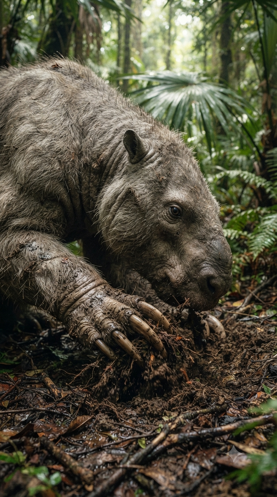
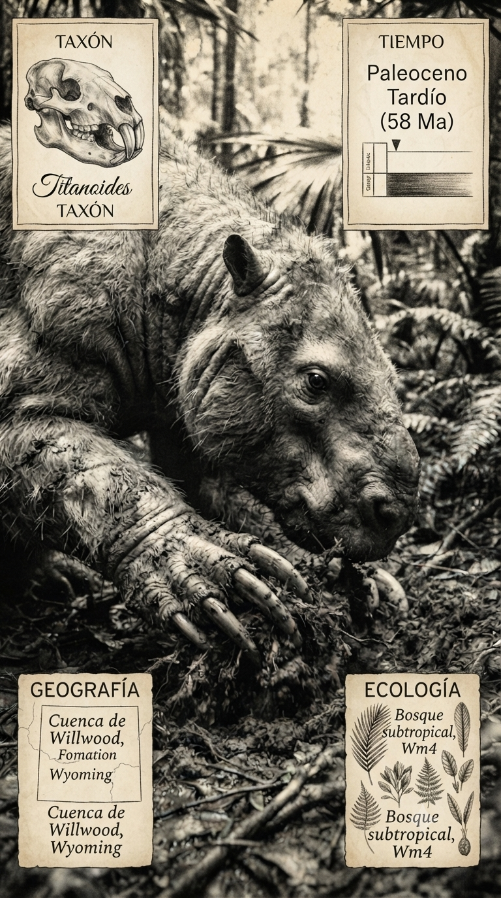
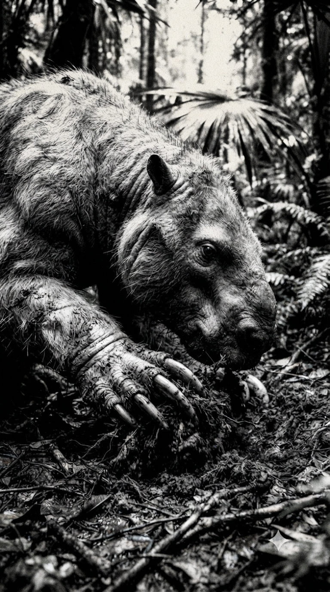

Paleoficha de PalEntropía



TAXÓN:
Titanoides
CLADO:
Pantodonta (Mammalia)
DIETA:
Herbívoro generalista / Omnívoro (basado en la morfología dental robusta)
TAMAÑO:
Aproximadamente entre 2 y 3 metros de longitud; complexión muy robusta.
LOCOMOCIÓN:
Plantígrada; extremidades poderosas provistas de fuertes garras, probablemente útiles para excavar y manipular el sustrato.
TIEMPO:
Paleoceno Superior, aproximadamente entre 58 y 55 millones de años.
GEOGRAFÍA:
Formación Fort Union y depósitos equivalentes de Norteamérica.
EQUIVALENCIA PALEOGEOGRÁFICA:
Llanuras de inundación y bosques subtropicales del Cenozoico temprano.
AMBIENTE PALEAOECOLÓGICO:
Bosques cálidos con extensas redes fluviales y elevada productividad vegetal.
ECOLOGÍA:
• Flora: Bosques subtropicales dominados por coníferas y angiospermas primitivas.
• Fauna secundaria: Condilartros, plesiadapiformes y una creciente diversidad de mamíferos posteriores a la extinción K–Pg.
• Nichos: Megaherbívoro de gran fuerza física, capaz de consumir vegetación resistente y posiblemente raíces mediante el uso de sus extremidades anteriores.
• Relaciones: Uno de los primeros mamíferos gigantes del Paleoceno, ocupando nichos ecológicos vacantes tras la desaparición de los dinosaurios no avianos.
CLIMA:
Wm8 (Subtropical cálido). Clima de efecto invernadero, muy húmedo y sin glaciaciones permanentes.
ESTADO ECOLÓGICO:
Estable. Titanoides representa el comienzo del gigantismo entre los mamíferos del Cenozoico, actuando como uno de los primeros grandes ingenieros del paisaje tras la extinción del final del Cretácico.